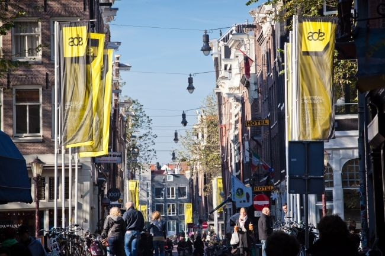

Amsterdam Dance Event 2014: The Party GuideSeptember 31, 2014

Amsterdam Dance Event is right around the corner and once again, the masses flocking to this staple industry calendar mark have been spoilt for choice where it’s festival aspect is concerned. Scoping labels, talents and brands from across the
industry spectrum, there is quite literally something for every taste under the sun throughout the vibrant Dutch capital October 15 through October 19. We wouldn’t want you getting caught up in all that planning, so Dancing Astronaut runs down
the essential party pit stops you need to be making throughout ADE 2014!
Read More
Depeche Mode announces release of new live album and DVD, ‘Live In Berlin’September 31, 2014
Depeche Mode just announced the release of Live In Berlin, their seventh live album. The CD/DVD will feature two hours of footage shot and directed by Anton Corbijn, a famous photographer and music video and film director.
The video portion will include not only concert footage from Berlin’s massive O2 World and interviews with both the band and their fans, but also a two-song acoustic session recorded at Salon Bel Ami, Berlin’s oldest
brothel.
Read More
Bose drops lawsuit against BeatsSeptember 31, 2014
Back in July, Bose filed a patent infringement lawsuit against Beats, arguing that its competitor had unlawfully stolen ideas pertaining to noise cancellation technology – best found in Bose’s QuietComfort headphones. At the time,
Bose attempted to block imports of Beats Studio and Beats Studio Wireless headphones in to the US. Now, however, the plaintiff has asked the International Trade Commission to cease its analysis of the case, as both sides claim that they
have reconciled.
Read More